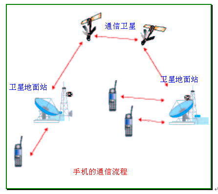

| --课程简介--
配套的系列教材建设 创新的教学实践体系
  
电学的发展始于18世纪晚期至19世纪早期。在以发明者伏特（A.Volta,1745-1827）命名的伏特电池出现后，开始有了直流电路。不久，即出现了第频交流电路。他利用法拉第（Faraday）感应定律所制造的变压器（transformer），可以更有效的传输交流电能。以后经过斯坦因麦兹（Charles Stienmetz）、爱迪生（Thomas Edison）、西门子（Werner Siemens）和特斯拉（Nikolas Tesla）等科学家的卓越工作，电力的产生与输配工程发展迅速，成为人类不可或缺的极重要组成部分。在此基础上，利用电能来传递消息，就成了人们追求的另一目标。 信息的传输是人类社会生活的重要内容。从古代的烽火到近代的旗语，都是人们寻求快速远距离通信的手段。直到19世纪电磁学的理论与实践已有坚实的基础后，人们开始寻求用电磁能量传送信息的方法。1837年莫尔斯（F.B.Morse）发明了电报（telegraph），创造了莫尔斯电码，开创了通讯的新纪元。1876年贝尔（Alexander G.Bell）发明了电话（telephone），能够直接将语言信息变为电能言道线传送。电报、电话的发明，为迅速准确地传递信息提供了新手段，是通信技术的重大突破。电报、电话都是言道线传送信号的。能否不用导线，在空间传送信号呢？答案是肯定的，这就是无线通信。 1864年英国的物理学家麦克斯韦（J.Clerk Maxwell）发表了“电磁场的动力理论”这一著名的论文，总结了前人在电磁学方面的工作，得出了电磁场方程，从理论上证明了电磁波（electromagnetic wave）的存在，为后来的无线电发明和发展奠定了坚实的理论基础。1887年德国物理学家赫兹（H.Hertz）以卓越的实验技巧实现了电磁波的客观存在。 1901年李.德.福雷斯特发明了三级管（triode），用它可组成具有放大、振荡、变频、调制、检波、波形变换等重要功能的电子线路，为现代千变万化的电子线路提供了“心脏”器件，因而电子管的出现时电子技术发展史上第一个重要里程碑。 1948年肖莱克（W.Shockley）等人发明了晶体三极管（transistor），它在节约电能、缩小体积与重量、延长寿命等方面远胜于电子管（electronic tube），因而成为电子技术发展史上第二个里程碑。 20世纪60年代开始出现的将“管”、“路”结合起来的集成大规模集成电路的不断涌现，已成为电子线路，特别是数字电路（digital circuit）发展的主流，对人们进入信息社会起了不可估量的推动作用。这可以说是电子技术发展史上的第三个重要的里程碑。 从发明无线电子技术开始，传输信息时无线技术的首要任务。直到今天，虽然无线电子技术领域在迅速扩大，但信息的传输与处理仍然是它的主要内容。高频电子线路（high frequency electronic circuit）所涉及的单元电路导师传输与处理信息这一基本点出发，来进行研究的。 |